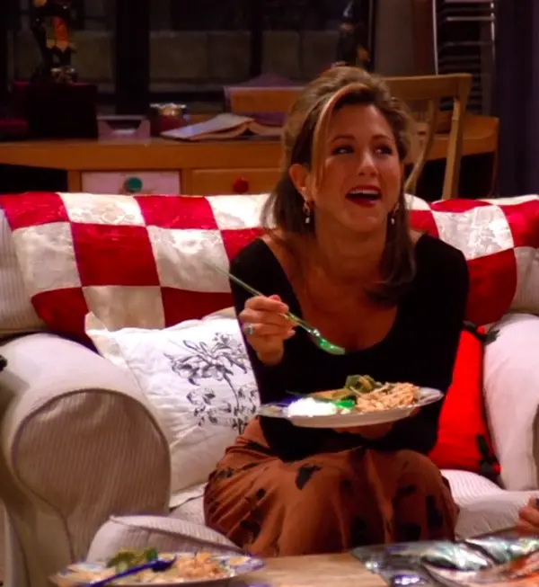

Rachel
Full Name
- Rachel Karen Green
Day of Birth
- May 05, 1969
Gender
- Female
Spouses
- Ross Geller (1999 - 1999)
Main Job
- Waitress (S1 - S3)
- Buyer and Personal Shopper (S3 - S5)
- Executive at Ralph Lauren
Portrayed by
- Jennifer Aniston
The sweet girl next door
Rachel Green, portrayed by Jennifer Aniston, is the quintessential girl next door who undergoes a remarkable
transformation throughout the series. From her iconic entrance in a wedding dress to her evolution into a confident,
independent woman, Rachel's journey is one of self-discovery, love, and personal growth.
Initially introduced as a privileged and sheltered young woman, Rachel's decision to leave her comfortable life
and forge her own path sets the stage for her transformative journey. Her determination to become self-sufficient leads
her to work at Central Perk and eventually pursue a successful career in fashion, showcasing her resilience and ambition.
Rachel's fashion sense and trendsetting style become an integral part of her character. Her iconic hairstyles
and ensembles continue to inspire and influence fashion trends even years after the show's conclusion. Rachel's passion
for fashion serves as a reflection of her evolving identity and her unwavering commitment to personal style.
While Rachel's journey in the professional world is noteworthy, her romantic escapades provide equal measures of drama,
laughter, and heartfelt moments. From her tumultuous on-again, off-again relationship with Ross to her other romantic
relationships, Rachel explores the complexities of love, heartbreak, and the pursuit of true happiness.
Beneath her glamorous exterior, Rachel possesses a kind heart and a genuine vulnerability. Her growth is evident in her
evolving friendships with her fellow friends, as she learns to value their support and reciprocate their love. Rachel's
journey showcases the transformative power of friendship and the importance of building meaningful connections.

Rachel's journey of self-discovery extends beyond her professional and romantic pursuits. As she navigates the challenges of adulthood,
Rachel grapples with finding her own identity and defining her place in the world. Her transformation from a young woman dependent on
her family's wealth to an individual carving out her own path showcases the courage and determination required to break free from societal
expectations.
Rachel's growth is evident not only in her career and personal life but also in her evolving sense of self-confidence and assertiveness.
Throughout the series, she finds her voice and learns to stand up for herself, setting boundaries and demanding the respect she deserves.
Rachel's journey serves as a reminder of the importance of self-empowerment and embracing one's worth.
Amidst the trials and tribulations, Rachel's journey is marked by moments of vulnerability and raw emotion. From her heartfelt conversations
with her friends to her honest introspection, she confronts her fears, insecurities, and past mistakes head-on. Rachel's willingness to
confront her own shortcomings and take responsibility for her actions demonstrates her growth as a person and adds depth to her character.
In summary, Rachel Green embodies resilience, independence, and personal growth. Her fashion-forward choices, evolving friendships, and
romantic endeavors make her an outstanding character of the sitcom. Rachel's journey of self-discovery, her pursuit of happiness, and her
unwavering determination inspire viewers to embrace change, strive for personal fulfillment, and believe in the transformative power of
their own journeys.